ggoncoplot
The ggoncoplot() function generates
oncoPrint visualizations that display genetic alterations
in a matrix format. This function is especially useful for visualizing
complex genomic data, such as mutations, copy number variations, and
other genomic alterations in cancer research.
Input data
The input should be a character matrix which encodes the alterations,
you can use string of ";", ":",
",", and "|" to separate multiple alterations.
Internally, ggoncoplot() will use
fortify_matrix() to get such matrix.
mat <- read.table(
textConnection(
"s1,s2,s3
g1,snv;indel,snv,indel
g2,,snv;indel,snv
g3,snv,,indel;snv"
),
row.names = 1, header = TRUE, sep = ",", stringsAsFactors = FALSE
)
mat
#> s1 s2 s3
#> g1 snv;indel snv indel
#> g2 snv;indel snv
#> g3 snv indel;snvA basic oncoprint can be generated as follows:
library(ggalign)
#> Loading required package: ggplot2
ggoncoplot(mat)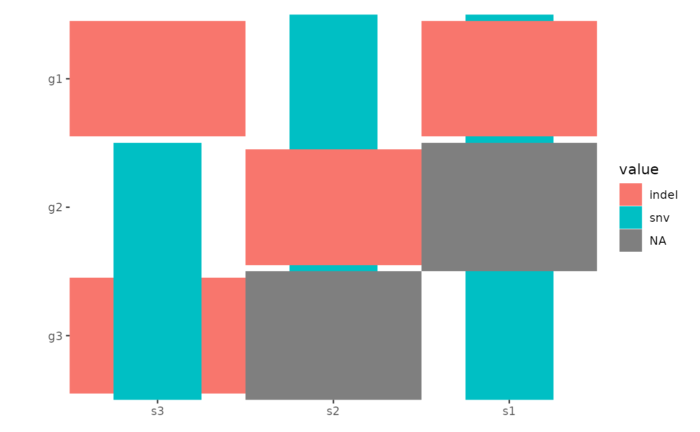
oncoPrint Customization
By default, all alterations are represented with tiles of equal width
and height, which may lead to overlapping. You can control the
width and height of the tiles using the
map_width and map_height arguments (we will
introduce another more effective ways to handle this in the
Specialized Geoms section):
ggoncoplot(mat, map_width = c(snv = 0.5), map_height = c(indel = 0.9))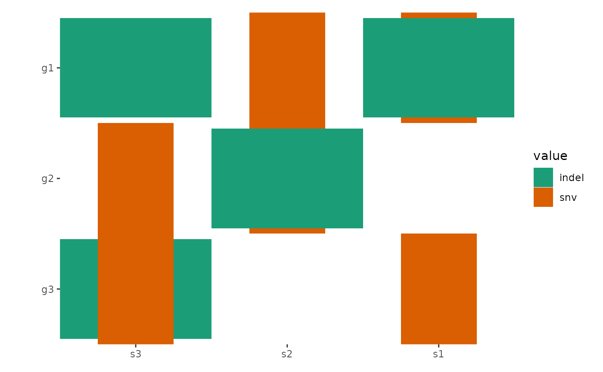
By default, all empty string will be converted to NA
value and ggplot2 will translate the NA values
and render it in the legend. To prevent this, you can turn off the
translation using na.translate = FALSE:
ggoncoplot(mat) +
scale_fill_brewer(palette = "Dark2", na.translate = FALSE)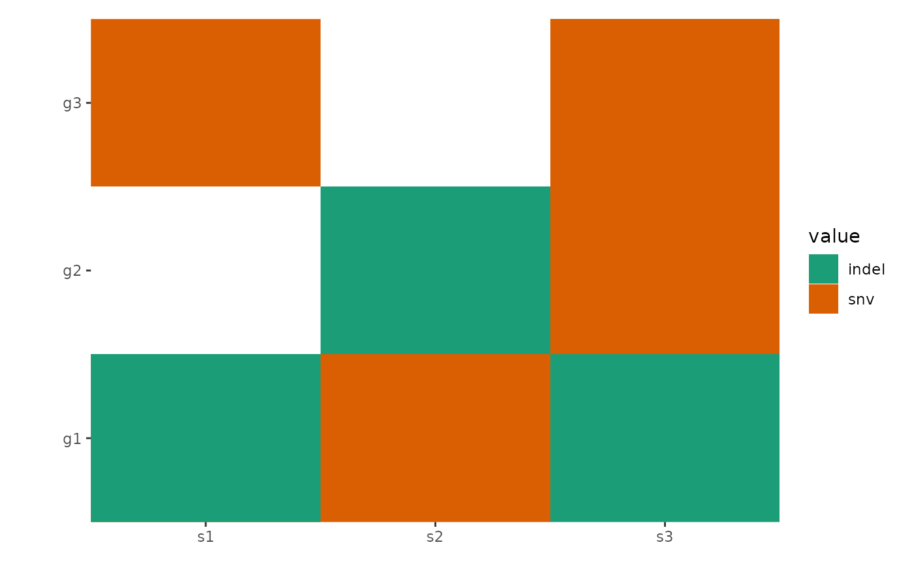
The function automatically reorders rows and columns based on
alteration frequency. Disable this with reorder_row = FALSE
and reorder_column = FALSE.
You can further customize layouts using methods from layout-customize.
ggoncoplot(mat, reorder_row = FALSE, reorder_column = FALSE) +
scale_fill_brewer(palette = "Dark2", na.translate = FALSE)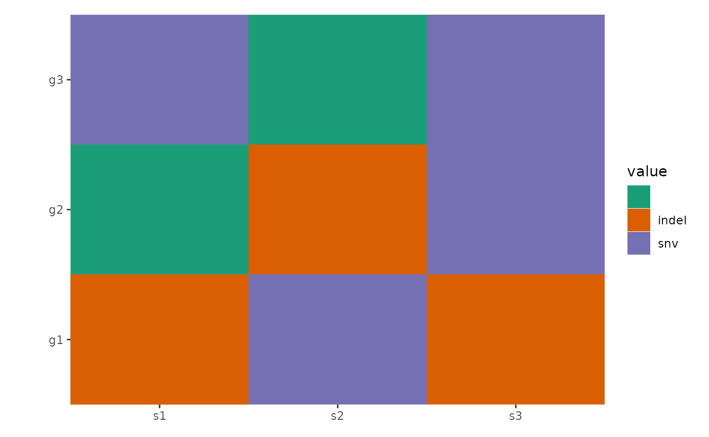
Advanced Data Handling
ggoncoplot() is built on ggheatmap() with a
default plot_data(),
which splits alterations into separate entries for visualization. (See
ggplot2 specification section in ggheatmap()
for the input data of plot_data()):
pdata <- function(data) {
tidyr::separate_longer_delim(data,
cols = value,
delim = stringr::regex("\\s*[;:,|]\\s*")
)
}
# Note: `ggoncoplot()` will automatically convert any empty strings to `NA`
# before pass it to `ggheatmap`. So this figure will contain an empty
# string value.
ggheatmap(mat) -
plot_data(pdata) +
scale_fill_brewer(palette = "Dark2", na.translate = FALSE)
#> → heatmap built with `geom_tile()`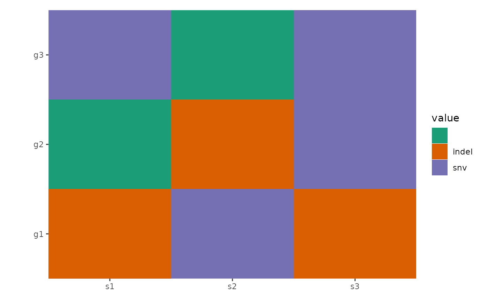
By default, the plot_data() is inherited from the parent
layout if the data of the plot is inherited from the layout. You can
apply the parent plot_data() first and then apply another
transformation by setting inherit = TRUE. This
functionality is especially useful when working with
ggoncoplot().
ggoncoplot(mat, map_width = c(snv = 0.5), map_height = c(indel = 0.9)) +
anno_top(size = 0.2) +
ggalign() +
# by setting `inherti = TRUE`, we apply the parent layout `plot_data()`
# (from the `ggoncoplot()` layout) firstly, which will split the alteration
# string and unnested the columns.
# Here: We then remove `NA` value
plot_data(~ subset(.x, !is.na(value)), inherit = TRUE) +
geom_bar(aes(.x, after_stat(count), fill = value)) +
# note: `ggoncoplot()` use `geom_tile()` to draw the oncoPrint,
# the guide is different from `geom_bar()`, though both looks
# like the same, we remove the guide of `geom_bar()` plot
guides(fill = "none") &
scale_fill_brewer(palette = "Dark2", na.translate = FALSE)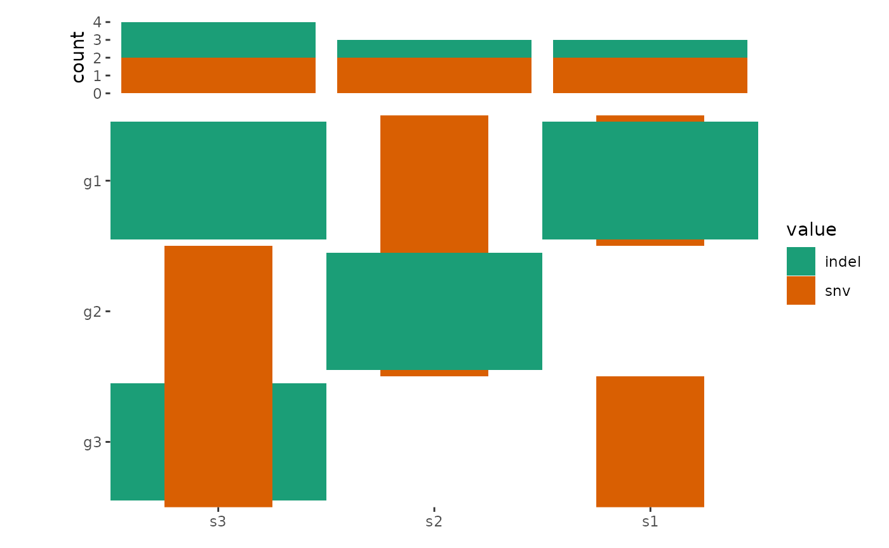
Integration with maftools
The ggoncoplot() function supports MAF
objects from the maftools package using the
fortify_matrix.MAF() method. It includes options to control
data generation for ggoncoplot(), such as drawing the top
n_top genes.
# load data from `maftools`
laml.maf <- system.file("extdata", "tcga_laml.maf.gz", package = "maftools")
# clinical information containing survival information and histology. This is optional
laml.clin <- system.file("extdata", "tcga_laml_annot.tsv", package = "maftools")
laml <- maftools::read.maf(
maf = laml.maf,
clinicalData = laml.clin,
verbose = FALSE
)
# Visualizing the Top 20 Genes
ggoncoplot(laml, n_top = 20) +
scale_fill_brewer(palette = "Dark2", na.translate = FALSE) +
theme_no_axes("x")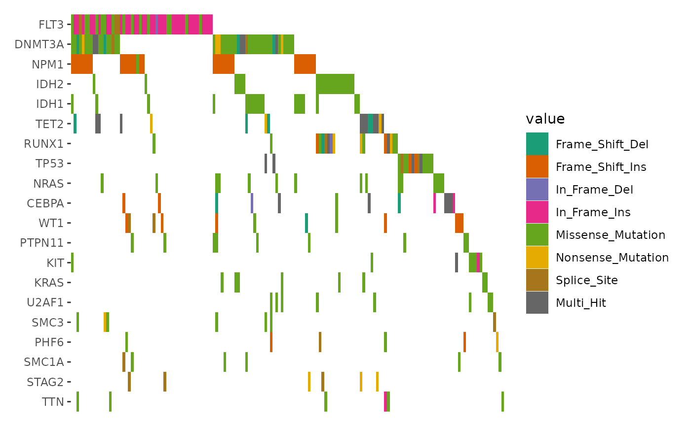
By default, samples without alterations in the selected genes are
removed. To include all samples, set
remove_empty_samples = FALSE:
align_plots(
ggoncoplot(laml, n_top = 20L, remove_empty_samples = FALSE) +
scale_fill_brewer(palette = "Dark2", na.translate = FALSE) +
theme_no_axes("x") +
ggtitle("Keep empty samples"),
ggoncoplot(laml, n_top = 20L, remove_empty_samples = TRUE) +
scale_fill_brewer(palette = "Dark2", na.translate = FALSE) +
theme_no_axes("x") +
ggtitle("Remove empty samples"),
ncol = 1L,
guides = "tlbr"
)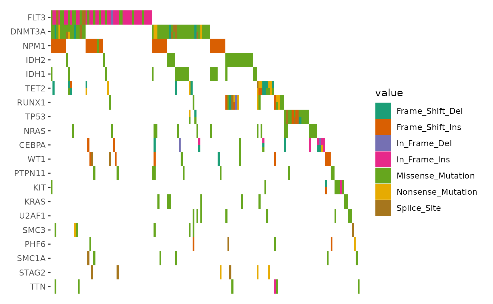
Specialized Geoms
geom_subtile()
When multiple alterations occur in the same sample and gene, they are
combined into a single value, "Multi_Hit", by default. To
visualize these alterations separately, you can set
collapse_vars = FALSE. However, doing so can lead to
overlapping alterations within the same cell, making the visualization
cluttered and hard to interpret.
In such cases, disabling the default filling and defining a custom
heatmap layer with geom_subtile() is more effective. This
function subdivides each cell into smaller rectangles, allowing the
distinct alterations to be clearly displayed.
ggoncoplot(laml, n_top = 20, collapse_vars = FALSE, filling = FALSE) +
geom_subtile(aes(fill = value), direction = "vertical") +
scale_fill_brewer(palette = "Dark2", na.translate = FALSE) +
theme_no_axes("x")
#> `geom_subtile()` subdivide tile into a maximal of 3 rectangles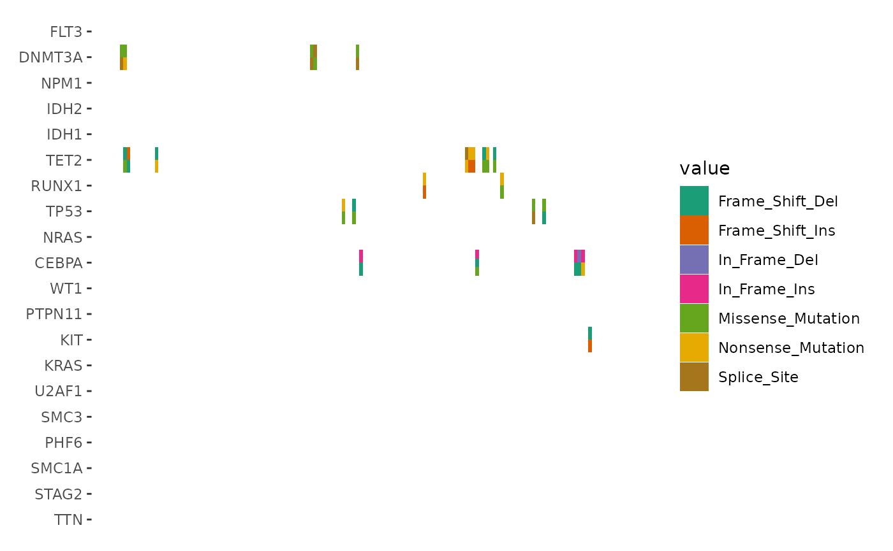
To focus only on cells with multiple alterations, filter the data
before applying geom_subtile():
ggoncoplot(laml, n_top = 20, collapse_vars = FALSE, filling = FALSE) +
plot_data(function(data) {
dplyr::filter(data, dplyr::n() > 1L, .by = c(".x", ".y"))
# we apply the parent layout `plot_data()` first (`inherit = TRUE`),
# which will split the alteration string and unnested the columns.
}, inherit = TRUE) +
geom_subtile(aes(fill = value), direction = "vertical") +
scale_fill_brewer(palette = "Dark2", na.translate = FALSE) +
theme_no_axes("x")
#> `geom_subtile()` subdivide tile into a maximal of 3 rectangles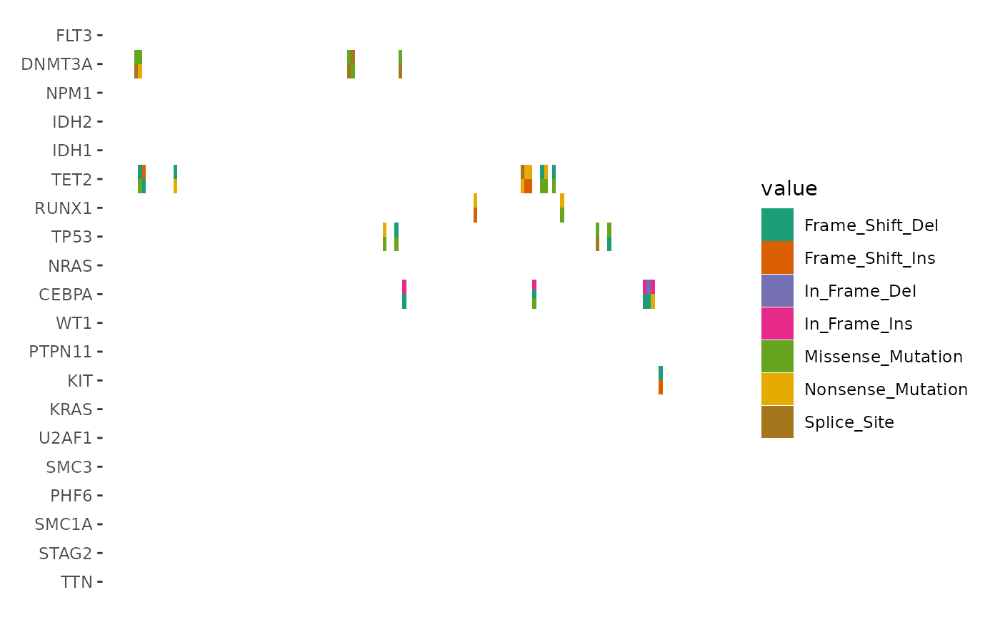
geom_draw()
geom_subtile() often suffices for most scenarios.
However, if you require a strategy similar to that of
ComplexHeatmap, consider using geom_draw(),
which offers greater flexibility for complex customizations.
Key Features of geom_draw():
- Custom Drawing Logic: Accepts a
drawaesthetic, allowing each cell to be rendered as a specific graphical object (grob). - Manual Scaling: Requires
scale_draw_manual()to mapdrawvalues to corresponding drawing functions. - Flexible Aesthetic Mapping: Functions mapped through
scale_draw_manual()can utilize any number of ggplot2 aesthetics and output custom graphical objects (grob). Beyond thex,y,xmin,xmax,width, andheightaesthetics, you may want to rely solely on mapped aesthetics (aes()). Unmapped aesthetics will default to ggplot2’s behavior, which might not produce the desired outcome. And always usenativeunit.
:) Sorry, I cannot deal with a pretty example for this, but the
function provided in values argument of
scale_draw_manual operates similarly to
alter_fun in ComplexHeatmap. Currently,
geom_subtile() performs well enough for most cases, making
geom_draw() somewhat cumbersome to use. Managing alteration
types, especially in the case of overlapping alterations, requires
meticulous design to ensure that the visual elements do not interfere
with each other.
library(grid)
ggplot(data.frame(value = letters[seq_len(5)], y = seq_len(5))) +
geom_draw(aes(x = 1, y = y, draw = value, fill = value)) +
scale_draw_manual(values = list(
a = function(x, y, width, height, fill) {
rectGrob(x, y,
width = width, height = height,
gp = gpar(fill = fill),
default.units = "native"
)
},
b = function(x, y, width, height, fill) {
rectGrob(x, y,
width = width, height = height,
gp = gpar(fill = fill),
default.units = "native"
)
},
c = function(x, y, width, height, fill) {
rectGrob(x, y,
width = width, height = height,
gp = gpar(fill = fill),
default.units = "native"
)
},
d = function(x, y, width, height, shape) {
gList(
pointsGrob(x, y, pch = shape),
# To ensure the rectangle color is shown in the legends, you
# must explicitly provide a color argument and include it in the
# `gpar()` of the graphical object
rectGrob(x, y, width, height,
gp = gpar(col = "black", fill = NA),
default.units = "native"
)
)
},
e = function(xmin, xmax, ymin, ymax) {
segmentsGrob(
xmin,
ymin,
xmax,
ymax,
gp = gpar(lwd = 2),
default.units = "native"
)
}
)) +
scale_fill_brewer(palette = "Dark2") +
theme_void()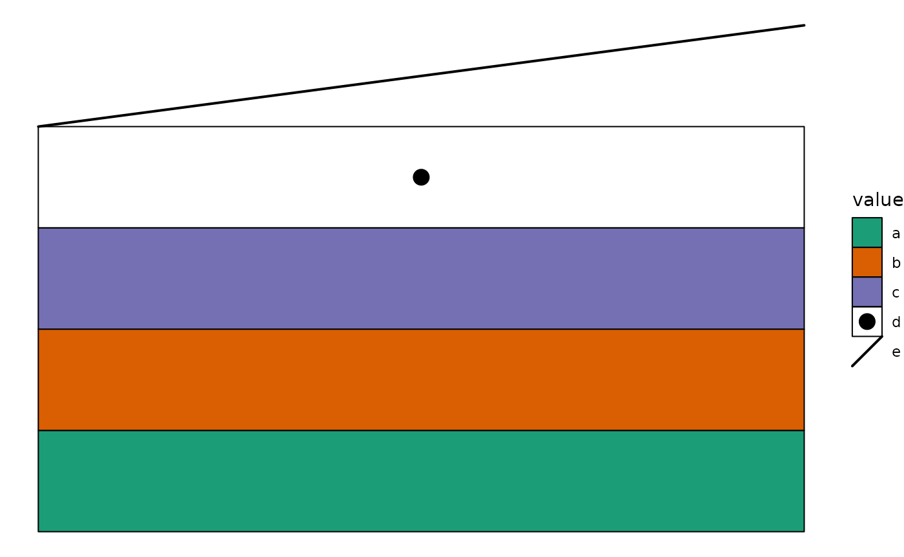
ggalign attributes
Except for the data used for the main plot,
fortify_matrix.MAF() also attaches several useful
attributes.
-
gene_summary: gene summary informations. Seemaftools::getGeneSummary()for details. -
sample_summary: sample summary informations. Seemaftools::getSampleSummary()for details. -
sample_anno: sample clinical informations. Seemaftools::getClinicalData()for details. -
n_genes: Total of genes. -
n_samples: Total of samples. -
titv: A list ofdata.frameswith Transitions and Transversions summary. Seemaftools::titv()for details.
You can extract these attributes using the
ggalign_attr() function. Below is an example of how to
extract the sample summary data (e.g., TMB) using
ggalign_attr() and add it to the top annotation of an
oncoplot:
ggoncoplot(laml, n_top = 20, collapse_vars = FALSE, filling = FALSE) +
geom_subtile(aes(fill = value), direction = "vertical") +
theme_no_axes("x") +
anno_top(size = 0.2) +
ggalign(data = function(data) {
data <- ggalign_attr(data, "sample_summary")
# matrix input will be automatically melted into a long foramted data
# frame in `ggalign()` function.
as.matrix(data[2:(ncol(data) - 1L)])
}) +
geom_bar(aes(.x, value, fill = .column_names),
stat = "identity"
) +
ylab("TMB") &
scale_fill_brewer(palette = "Dark2", na.translate = FALSE)
#> `geom_subtile()` subdivide tile into a maximal of 3 rectangles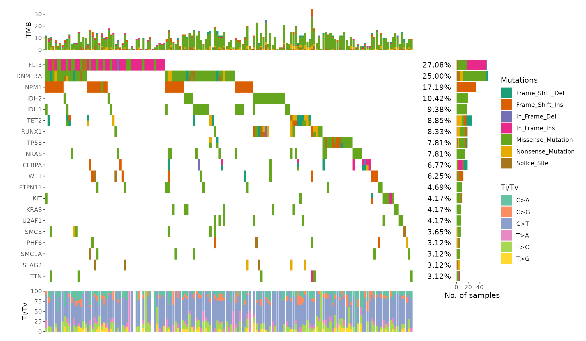
We can draw the example from maftools vignette.
ggoncoplot(laml, n_top = 20, collapse_vars = FALSE, filling = FALSE) +
geom_subtile(aes(fill = value), direction = "vertical") +
theme_no_axes("x") +
# since legends from geom_tile (oncoPrint body) and `geom_bar`
# is different, though both looks like the same, the internal
# won't merge the legends. we remove the legends of oncoPrint body
guides(fill = "none") +
# add top annotation
anno_top(size = 0.2) +
ggalign(data = function(data) {
data <- ggalign_attr(data, "sample_summary")
# matrix input will be automatically melted into a long foramted data
# frame in `ggalign()` function.
as.matrix(data[2:(ncol(data) - 1L)])
}) +
geom_bar(aes(.x, value, fill = .column_names),
stat = "identity"
) +
ylab("TMB") +
# add right annotation
anno_right(size = 0.2) -
# remove bottom spaces of the right annotation when aligning
plot_align(free_spaces = "b") +
# add the text percent for the alterated samples in the right annotation
ggalign(data = function(data) {
# Atomic vector will be put in the `value` column of the data frame.
ggalign_attr(data, "gene_summary")$AlteredSamples /
ggalign_attr(data, "n_samples")
}) +
geom_text(aes(1, label = scales::label_percent()(value)), hjust = 1) +
scale_x_continuous(
expand = expansion(),
name = NULL, breaks = NULL,
limits = c(0, 1)
) +
theme(plot.margin = margin()) +
# add the bar plot in the right annotation
ggalign(data = function(data) {
data <- ggalign_attr(data, "gene_summary")
# matrix input will be automatically melted into a long foramted data
# frame in `ggalign()` function.
as.matrix(data[2:8])
}) +
geom_bar(aes(value, fill = .column_names),
stat = "identity",
orientation = "y"
) +
xlab("No. of samples") -
# we apply the scale mapping to the top and right annotation: `position = "tr"`
# and the main plot: `main = TRUE`
with_quad(
scale_fill_brewer("Mutations",
palette = "Dark2", na.translate = FALSE
),
position = "tr",
main = TRUE
) +
# add bottom annotation
anno_bottom(size = 0.2) +
# add bar plot in the bottom annotation
ggalign(data = function(data) {
data <- ggalign_attr(data, "titv")$fraction.contribution
# matrix input will be automatically melted into a long foramted data
# frame in `ggalign()` function.
as.matrix(data[2:7])
}) +
geom_bar(aes(y = value, fill = .column_names), stat = "identity") +
ylab("Ti/Tv") +
scale_fill_brewer("Ti/Tv", palette = "Set2")
#> Warning: Removed 24 rows containing missing values or values outside the scale range
#> (`geom_bar()`).
#> `geom_subtile()` subdivide tile into a maximal of 3 rectangles
Session information
sessionInfo()
#> R version 4.4.2 (2024-10-31)
#> Platform: x86_64-pc-linux-gnu
#> Running under: Ubuntu 22.04.5 LTS
#>
#> Matrix products: default
#> BLAS: /usr/lib/x86_64-linux-gnu/openblas-pthread/libblas.so.3
#> LAPACK: /usr/lib/x86_64-linux-gnu/openblas-pthread/libopenblasp-r0.3.20.so; LAPACK version 3.10.0
#>
#> locale:
#> [1] LC_CTYPE=C.UTF-8 LC_NUMERIC=C LC_TIME=C.UTF-8
#> [4] LC_COLLATE=C.UTF-8 LC_MONETARY=C.UTF-8 LC_MESSAGES=C.UTF-8
#> [7] LC_PAPER=C.UTF-8 LC_NAME=C LC_ADDRESS=C
#> [10] LC_TELEPHONE=C LC_MEASUREMENT=C.UTF-8 LC_IDENTIFICATION=C
#>
#> time zone: UTC
#> tzcode source: system (glibc)
#>
#> attached base packages:
#> [1] grid stats graphics grDevices utils datasets methods
#> [8] base
#>
#> other attached packages:
#> [1] ggalign_0.0.5.9000 ggplot2_3.5.1
#>
#> loaded via a namespace (and not attached):
#> [1] sass_0.4.9 utf8_1.2.4 generics_0.1.3 tidyr_1.3.1
#> [5] maftools_2.22.0 lattice_0.22-6 stringi_1.8.4 digest_0.6.37
#> [9] magrittr_2.0.3 evaluate_1.0.1 RColorBrewer_1.1-3 fastmap_1.2.0
#> [13] R.oo_1.27.0 Matrix_1.7-1 jsonlite_1.8.9 R.utils_2.12.3
#> [17] survival_3.7-0 purrr_1.0.2 fansi_1.0.6 scales_1.3.0
#> [21] textshaping_0.4.0 jquerylib_0.1.4 cli_3.6.3 rlang_1.1.4
#> [25] R.methodsS3_1.8.2 munsell_0.5.1 splines_4.4.2 withr_3.0.2
#> [29] cachem_1.1.0 yaml_2.3.10 DNAcopy_1.80.0 tools_4.4.2
#> [33] dplyr_1.1.4 colorspace_2.1-1 vctrs_0.6.5 R6_2.5.1
#> [37] lifecycle_1.0.4 stringr_1.5.1 fs_1.6.5 ragg_1.3.3
#> [41] pkgconfig_2.0.3 desc_1.4.3 pkgdown_2.1.1 pillar_1.9.0
#> [45] bslib_0.8.0 gtable_0.3.6 glue_1.8.0 data.table_1.16.2
#> [49] systemfonts_1.1.0 xfun_0.49 tibble_3.2.1 tidyselect_1.2.1
#> [53] knitr_1.49 farver_2.1.2 htmltools_0.5.8.1 rmarkdown_2.29
#> [57] labeling_0.4.3 compiler_4.4.2